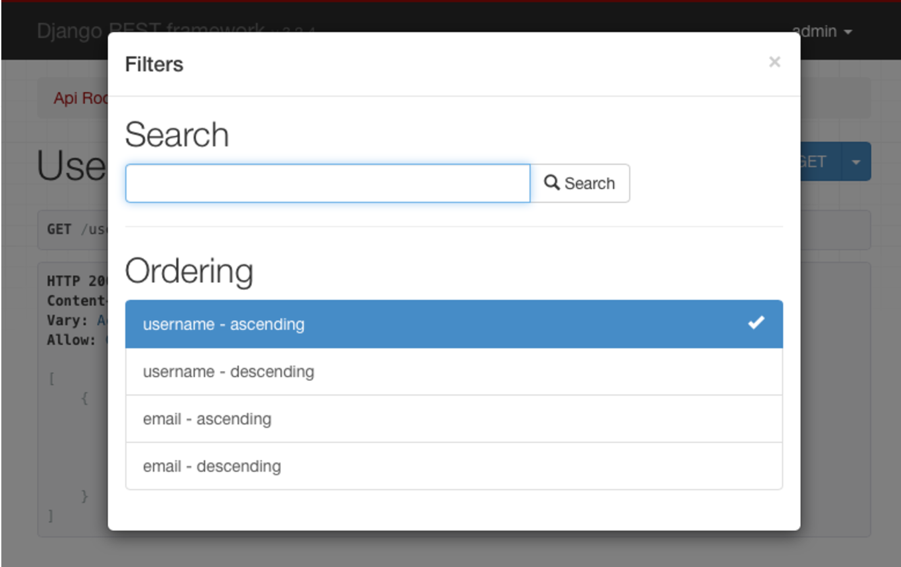
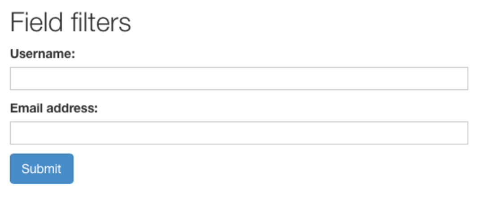
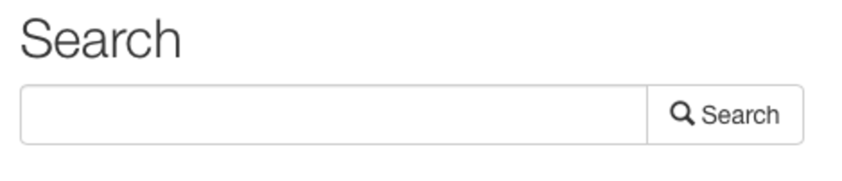
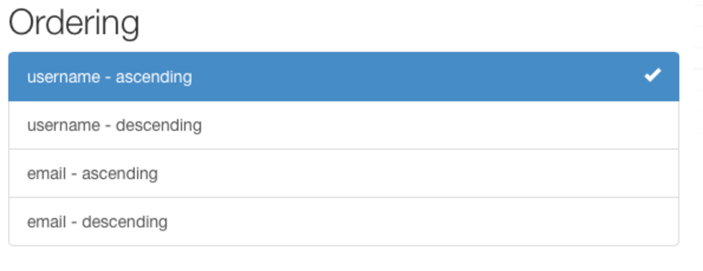

Django REST Framework - Filtering
"The root QuerySet provided by the Manager describes all objects in the database table. Usually, though, you'll need to select only a subset of the complete set of objects."
"Manager가 제공하는 루트 QuerySet은 데이터베이스 테이블의 모든 객체를 설명합니다. 그러나 일반적으로 개체의 전체 집합 중 일부만 선택해야합니다."
— Django documentation
Filtering
REST 프레임워크의 generic list view의 기본 동작 모델 manager에 대한 전체 QuerySet을 반환하는 것입니다. 때때로 당신 API가 QuerySet에 의해 반환 되된 항목을 제한하기를 원할 것입니다.
GenericAPIView를 하위 클래스로 하는 view의 QuerySet를 필터링하는 가장 간단한 방법은 .get_queryset()메서드를 오버라이드하는 것입니다.
이 메소드응 대체라면 다양한 방식으로 view에서 리턴 된 queryset을 custom 할 수 있습니다.
Filtering against the current user (현재 사용자에 대한 필터링)
쿼리를 필터링하여 요청을 한 현재 인증 된 사용자와 관련된 결과만 반환되도록 할 수 있습니다.
request.user의 값에 따라 필터링을 수행 할 수 있습니다.
예를 들어:
from myapp.models import Purchase
from myapp.serializers import PurchaseSerializer
from rest_framework import generics
class PurchaseList(generics.ListAPIView):
serializer_class = PurchaseSerializer
def get_queryset(self):
"""
This view should return a list of all the purchases
for the currently authenticated user.
"""
user = self.request.user
return Purchase.objects.filter(purchaser=user)
Filtering against the URL
필터링의 또 다른 스타일은 URL 일부를 기반으로 queryset을 제한하는 것입니다.
예를 들어 URLconfig에 다음과 같은 항목이 포함 된 경우:
url('^purchases/(?P<username>.+)/$', PurchaseList.as_view()),
그런 다음 URL의 사용자 이름 부분으로 필터링 된 purchases queryset을 반환하는 view를 작성 할 수 있습니다.
class PurchaseList(generics.ListAPIView):
serializer_class = PurchaseSerializer
def get_queryset(self):
"""
This view should return a list of all the purchases for
the user as determined by the username portion of the URL.
"""
username = self.kwargs['username']
return Purchase.objects.filter(purchaser__username=username)
Filtering against query parameters
초기 쿼리셋을 필터링하는 마지막 예는 URL의 쿼리 parameter를 기반으로 초기 쿼리겍을 결정하는 것입니다.
http://example.com/api/purchases?username=denvercoder9과 같은 URL을 처리하려면 .get.queryset()을 재정의하고 username 매개변수가 URL에 포함되어있는 경우에만 쿼리셋을 필터링하세요.
class PurchaseList(generics.ListAPIView):
serializer_class = PurchaseSerializer
def get_queryset(self):
"""
Optionally restricts the returned purchases to a given user,
by filtering against a `username` query parameter in the URL.
"""
queryset = Purchase.objects.all()
username = self.request.query_params.get('username', None)
if username is not None:
queryset = queryset.filter(purchaser__username=username)
return queryset
Generic Filtering
기본 쿼리셋을 재정의 할 수 있을뿐만 아니라 REST 프레임워크는 복잡한 검색 및 필터를 쉽게 구성할 수 있는 일반 필터링 백엔드를 지원합니다.
Generic filter는 browsable API 및 admin API에서 HTML 컨트롤로 나타낼 수도 있습니다.

Setting filter backends
기본 필터 백엔드는 DEFAULT_FILTER_BACKENDS 설정을 사용하여 전체적으로 설정할 수 있습니다. 예를 들면,
REST_FRAMEWORK = {
'DEFAULT_FILTER_BACKENDS': ('django_filters.rest_framework.DjangoFilterBackend',)
}
GenericAPIView CBV를 사용하여 view 당 또는 viewset 단위로 필터 백엔드를 설정할 수도 있습니다.
import django_filters.rest_framework
from django.contrib.auth.models import User
from myapp.serializers import UserSerializer
from rest_framework import generics
class UserListView(generics.ListAPIView):
queryset = User.objects.all()
serializer_class = UserSerializer
filter_backends = (django_filters.rest_framework.DjangoFilterBackend,)
Filtering and object lookups
필터 백엔드는 view에 대해 구성되고 list view를 필터링하는데 사용되는 경우, 하나의 객체를 반환하는데 가용되는 queryset을 필터링하는데에도 사용됩니다.
예를 들어, 앞의 예제와 id가 4675인 제품의 경우 다음 URL은 해당 제품 인스턴스에서 필터링 조건이 충족되었는지 여부에 따라 해당 객체를 반환하거나 404 응답을 반환합니다.
http://example.com/api/products/4675/?category=clothing&max_price=10.00
Overriding the initial queryset
오버라이드 된 .get_queryset()과 generic filtering을 함께 사용하면 모든 것이 예상대로 작동합니다. 예를 들어, Product가 User라는 구매자와 many-to-many관계를 갖고 있다면 다음과 같은 view를 작성하는 것이 좋습니다.
class PurchasedProductsList(generics.ListAPIView):
"""
Return a list of all the products that the authenticated
user has ever purchased, with optional filtering.
"""
model = Product
serializer_class = ProductSerializer
filter_class = ProductFilter
def get_queryset(self):
user = self.request.user
return user.purchase_set.all()
API Guide
DjangoFilterBackend
django-filter 라이브러리에는 REST 프레임워크에 대해 고도의 custom이 가능한 필드 필터링을 지원하는 DjangoFilterBackend클래스가 포함되어 있습니다.
DjangoFilterBackend를 사용하려면 먼저 django-filter를 설치하세요.
pip install django-filter
이제 필터 백엔드를 설정에 추가해야 합니다.
REST_FRAMEWORK = {
'DEFAULT_FILTER_BACKENDS': ('django_filters.rest_framework.DjangoFilterBackend',)
}
또는 필터 백엔드를 개별 view 또는 viewset에 추가하세요.
from django_filters.rest_framework import DjangoFilterBackend
class UserListView(generics.ListAPIView):
...
filter_backends = (DjangoFilterBackend,)
browsable API나 admin API를 사용하는 경우, django-crispy-forms를 설치하여 HTML View에서 필터 양식의 표시를 향상시키고 부트스트랩3 HTML을 랜더링할 수 있습니다.
pip install django-crispy-forms
crispy-forms 를 설치하고 Django의 INSTALLED_APPS에 추가하면 browsable API는 다음과 같이 DjangoFilterBackend에 대한 필터링 컨트롤을 제공합니다.

Specifying filter fields
필요한 것은 간단한 equality-based 필터링 뿐입니다. 필터링 할 필드 집합을 나열하는 view 또는 viewset에 filter_fields 속성을 설정할 수 있습니다.
class ProductList(generics.ListAPIView):
queryset = Product.objects.all()
serializer_class = ProductSerializer
filter_backends = (filters.DjangoFilterBackend,)
filter_fields = ('category', 'in_stock')
이렇게 하면 주어진 필드에 대한 FilterSet클래스가 자동으로 생성되며 다음과 같은 요청을 할 수 있습니다.
http://example.com/api/products?category=clothing&in_stock=True
Specifying a FilterSet (FilterSet 지정하기)
고급 필터링 요구 사항의 경우 view에서 사용해야하는 FilterSet클래스를 지정할 수 있습니다. 예:
import django_filters
from myapp.models import Product
from myapp.serializers import ProductSerializer
from rest_framework import generics
class ProductFilter(django_filters.rest_framework.FilterSet):
min_price = django_filters.NumberFilter(name="price", lookup_expr='gte')
max_price = django_filters.NumberFilter(name="price", lookup_expr='lte')
class Meta:
model = Product
fields = ['category', 'in_stock', 'min_price', 'max_price']
class ProductList(generics.ListAPIView):
queryset = Product.objects.all()
serializer_class = ProductSerializer
filter_backends = (django_filters.rest_framework.DjangoFilterBackend,)
filter_class = ProductFilter
그러면 다음과 같은 요청을 할 수 있습니다.
http://example.com/api/products?category=clothing&max_price=10.00
django-filter를 사용하여 관계를 확장할 수도 있습니다. 각 제품에는 제조업체 모델에 대한 외래 키가 있다고 가정하여 제조업체 이름을 사용하여 필터링 하는 필터를 만듭니다. 예:
import django_filters
from myapp.models import Product
from myapp.serializers import ProductSerializer
from rest_framework import generics
class ProductFilter(django_filters.rest_framework.FilterSet):
class Meta:
model = Product
fields = ['category', 'in_stock', 'manufacturer__name']
이렇게 하면 다음과 같은 쿼리를 작성할 수 있습니다.
http://example.com/api/products?manufacturer__name=foo
이것은 좋은 일이지만 Django의 double-underscore 규칙을 API의 일부로 나타냅니다. 대신 명식적으로 필터 인수의 이름을 지정하려면 FilterSet클래스에 필터 인수를 명시적으로 포함시킬 수 있습니다.
import django_filters
from myapp.models import Product
from myapp.serializers import ProductSerializer
from rest_framework import generics
class ProductFilter(django_filters.rest_framework.FilterSet):
manufacturer = django_filters.CharFilter(name="manufacturer__name")
class Meta:
model = Product
fields = ['category', 'in_stock', 'manufacturer']
이제 다음을 실행 할 수 있습니다.
http://example.com/api/products?manufacturer=foo
필터 셋 사용데 대한 자세한 내용은 django-filter documentation를 참조하세요.
Hints & Tips
- 기본적으로 필터링은 사용할 수 없습니다.
DjangoFilterBackend를 사용하려면DEFAULT_FILTER_BACKENDS설정을 사용하여 설치되었는지 확인하세요. - Boolean 필드를 사용할 때는
0,1,true나false가 아닌 URL 쿼리 매개변수에True및False값을 사용해야 합니다. (허용된 boolean 값은 현재 Django의 NullBooleanSelect implementation에서 고정되어 있습니다.) django-filter는 Django의 double-underscore 문법을 통해 관계가 맺어진 필터링을 지원합니다.
SearchFilter
SearchFilter클래스는 간단한 단일 쿼리 parameter 기반 검색을 지원하며 django 관리자의 검색 기능을 기반으로 합니다.
사용 중에는 browsable API에 SearchFilter 컨트롤이 포함됩니다.

SearchFilter클래스는 뷰에 search_fields속성이 설정된 경우에만 적용됩니다. search_fields속성은 CharField또는 TextField와 같이 모델의 텍스트 유형 필드의 이름의 list이어야 합니다.
class UserListView(generics.ListAPIView):
queryset = User.objects.all()
serializer_class = UserSerializer
filter_backends = (filters.SearchFilter,)
search_fields = ('username', 'email')
이렇게 하면 클라이언트가 다음과 같은 쿼리를 작성하여 list의 items를 필터링 할 수 있습니다.
http://example.com/api/users?search=russell
검색 API double-underscore 표기법을 사용하여 ForeignKey 또는 ManyToManyField에서 관련 조회를 수행할 수도 있습니다.
search_fields = ('username', 'email', 'profile__profession')
기본적으로 검색은 대소 문자를 구분하지 않는 부분 일치를 사용합니다. 검색 parameter에는 공백 또는 /또는 쉼표로 구분 된 여러 검색어가 포함 될 수 있습니다. 여러 검색어가 사용되면 제공된 모든 용어가 일치하는 경우에만 list에서 객체가 반환됩니다.
검색 동작은 다양한 문자를 search_fields앞에 붙이면 제한 될 수 있습니다.
'^': 검색을 시작합니다.'=': 정확히 일치'@': 전체 텍스트 검색 (현재 django의 MySQL 백엔드만 지원됩니다.'$': 정규식 검색
예를 들면 :
search_fields = ('=username', '=email')
기본적으로 검색 parameter의 이름은 'search'이지만 SEARCH_PARAM 설정으로 오버라이드 될 수 있습니다.
자세한 내용은 장고 문서를 참조하세요.
OrderingFilter
OrderingFilter클래스는 쿼리 parameter로 제어되는 간단한 결과 순서를 지원합니다.

기본적으로 쿼레 parameter의 이름은 'ordering'이지만, ORDERING_PARAM설정으로 오버라이드 할 수 있습니다.
예를 들어 사용자 이름별로 사용자를 정렬 하려면 다음과 같이 입력하세요.
http://example.com/api/users?ordering=username
클라이언트는 필드 이름의 접두사를 '-'로 지정함으로써 역순으로 지정할 수도 있습니다.
http://example.com/api/users?ordering=-username
여러 개의 순서도 지정 할 수 있습니다.
http://example.com/api/users?ordering=account,username
Specifying which fields may be ordered against
API가 정렬 필터에서 허용해야하는 필드를 명시적으로 지정하는 것이 좋습니다. 다음과 같이 view에서 ordering_fields속성을 설정하여 이를 수행 할 수 있습니다.
class UserListView(generics.ListAPIView):
queryset = User.objects.all()
serializer_class = UserSerializer
filter_backends = (filters.OrderingFilter,)
ordering_fields = ('username', 'email')
이렇게 하면 사용자가 암호 해시 필드나 기타 중요한 데이터에 대해 정렬할 수 있게 하는 등 예기치 않은 데이터 유출을 방지할 수 있습니다.
view에서 ordering_fields속성을 지정하지 않으면 필터 클래스는 기본적으로 serializer_class속성을 지정된 serializer의 읽을 수 있는 필드를 필터링 할 수 있게 합니다.
ordering_fields에 한개의 조건(ex. start_date)만 넣으면,pagination사용시 중복되는 조건에 대하여 어떤 것을 앞에 두어야하는지에 대한 이슈가 일어나서 페이지가 넘어갈때 중복된 값이 출력될 수 있습니다. 두개 이상의 조건을 제시하면 pagination 시 중복된 값의 출력을 방지할 수 있습니다.
뷰에 사용 된 쿼리셋은 중요한 데이터가 포함되어 있지 않은 것으로 확신하는 경우, 특수 값 '__all__'을 사용하여 view가 모든 모델 필드 또는 쿼리셋 합계에서 정렬을 허용하도록 명시적으로 지정할 수 있습니다.
class BookingsListView(generics.ListAPIView):
queryset = Booking.objects.all()
serializer_class = BookingSerializer
filter_backends = (filters.OrderingFilter,)
ordering_fields = '__all__'
Specifying a default ordering
ordering 속성이 view에 설정되어 있는 경우, 이것은 기본 순서로 사용됩니다.
일반적으로 초기 쿼리셋에서 order_by를 설정하여 이 작업을 제어할 수 있지만 view의 ordering parameter를 사용하면 렌더링 된 템플릿에 컨텍스트로 자동 전달 할 수 있는 방식으로 순서를 지정할 수 있습니다. 이렇게 하면 결과를 정렬하는데 사용하는 경우, column headers를 자동으로 다르게 렌더링 할 수 있습니다.
class UserListView(generics.ListAPIView):
queryset = User.objects.all()
serializer_class = UserSerializer
filter_backends = (filters.OrderingFilter,)
ordering_fields = ('username', 'email')
ordering = ('username',)
ordering 속성은 문자열이거나 문자열의 list/tuple 일 수 있습니다.
DjangoObjectPermissionsFilter
DjangoObjectPermissionsFilter는 django-guardian패키지와 함께 사용되며 custom 'view' 권한이 추가되었습니다. 필터는 쿼리셋이 사용자에게 적절한 view 권한이 있는 객체만 반환하도록 합니다.
DjangoObjectPermissionsFilter를 사용하고 있다면 적절한 객체 권한 클래스를 추가하여 적절한 객체 권한이 있는 사용자만 인스턴스에서 작업 할 수 있도록 할 수 있습니다. 가장 쉬운 방법은 DjangoObjectPermissions를 서브 클래스화하고 perms_map속성에 'view'권한을 추가하는 것입니다.
DjangoObjectPermissionsFilter와 DjangoObjectPermissions를 사용하는 완전한 예는 다음과 같습니다.
permission.py:
class CustomObjectPermissions(permissions.DjangoObjectPermissions):
"""
Similar to `DjangoObjectPermissions`, but adding 'view' permissions.
"""
perms_map = {
'GET': ['%(app_label)s.view_%(model_name)s'],
'OPTIONS': ['%(app_label)s.view_%(model_name)s'],
'HEAD': ['%(app_label)s.view_%(model_name)s'],
'POST': ['%(app_label)s.add_%(model_name)s'],
'PUT': ['%(app_label)s.change_%(model_name)s'],
'PATCH': ['%(app_label)s.change_%(model_name)s'],
'DELETE': ['%(app_label)s.delete_%(model_name)s'],
}
views.py:
class EventViewSet(viewsets.ModelViewSet):
"""
Viewset that only lists events if user has 'view' permissions, and only
allows operations on individual events if user has appropriate 'view', 'add',
'change' or 'delete' permissions.
"""
queryset = Event.objects.all()
serializer_class = EventSerializer
filter_backends = (filters.DjangoObjectPermissionsFilter,)
permission_classes = (myapp.permissions.CustomObjectPermissions,)
모델에 대한 'view'권한을 추가하는 방법에 대한 자세한 내용은 django-guardian의 relevant section 과 이 블로그 게시물을 참조하세요.
Custom generic filtering
나만의 generic 필터링 백엔드를 제공하거나, 다른 개발자가 사용할 수 있는 설치 가능한 앱을 작성 할 수도 있습니다.
이렇게하려면 BaseFilterBackend를 무시하고 .filter_queryset(self, request, queryset, view)메서드를 오버라이드 하세요. 메서드는 필터링 된 새 쿼리셋을 반환해야합니다.
클라이언트가 검색 및 필터링을 수행할 수 있을뿐만 아니라 generic filter 백엔드는 특정 요청이나 사용자에게 표시되어야 하는 객체를 제한하는데 유용 할 수 있습니다.
Example
예를 들어, 사용자가 만든 개체만 볼 수 있도록 사용자를 제한해야 할 수 있습니다.
class IsOwnerFilterBackend(filters.BaseFilterBackend):
"""
Filter that only allows users to see their own objects.
"""
def filter_queryset(self, request, queryset, view):
return queryset.filter(owner=request.user)
view에서 get_queryset()을 오버라이드하여 동일한 동작을 얻을 수 있지만 filter 백엔드를 사용하면 이 제한을 여러 view에 더 쉽게 추가하거나 전체 API에 적용할 수 있습니다.
Customizing the interface
generic filter는 browsable API에도 친터페이스를 제공 할 수 있습니다. 이렇게 하려면 filter의 렌더링 된 HTML 표현을 반환하는 to_html()메서드를 구현해야합니다. 이 메서드의 서명은 다음과 같습니다.
to_html(self, request, queryset, view)
메서드는 렌더링 된 HTML 문자열을 반환해야 합니다.
Pagination & schemas
REST 프레임워크가 제공하는 스키마 자동 생성에서 filter 컨트롤을 사용할 수 있도록 하려면, get_schema_fields()메서드를 구현하면 됩니다. 이 메서드는 coreapi.Filed인스턴스의 list를 반환해야 합니다.
Third party packages
다음의 타사 패키지는 추가 필터 구현을 제공합니다.
Django REST framework
django-rest-framework-filters 패키지는 DjangoFilterBackend 클래스와 함께 작동하며 관계에 대한 필터를 쉽게 만들거나 주어진 필드에 대해 여러 개의 필터 조회 유형을 만들 수 있습니다.
Django REST framework full word search filter
djangorestframework-word-filter는 filters.SearchFilter의 대안으로 개발되었으며 텍스트 또는 완전 일치에서 전체 단어를 검색합니다.
Django URL Filter
django-url-filter는 친인간적인 URL을 통해 데이터를 필터링하는 안전한 방법을 제공합니다. 이는 DRF serializer 및 필드와 매우 유사하게 작동합니다. 즉, filtersets 및 필터라고 하는 것을 제외하고는 중첩 될 수 있습니다. 이를 통해 관련 데이터를 쉽게 필터링 할 수 있습니다. 또한 이 라이브러리는 일반적인 목적이므로 Django QuerySet뿐만 아니라 다른 소스의 데이터를 필터링하는데 사용할 수 있습니다.
drf-url-filters
drf-url-filter는 Drf ModelViewSet의 Queryset에 필터를 간단하고 구성 가능한 방식으로 적용하는 간단한 Django 응용 프로그램입니다. 또한 들어오는 쿼리 parameter 및 해당 값에 대한 유효성 검사를 지원합니다. 아름다운 python 패키지 Voluptuous는 들어오는 쿼리 parameter의 유효성 검사에 사용됩니다. 가장 관대한 부분은 쿼리 parameter 요구 사항에 따라 자체 유효성 검사를 정의할 수 있다는 것입니다.